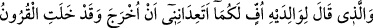

cennet onun ayakları altındadır.” buyurdu.[32]
Cennet ki annelerin sarayıdır,
Annelerin ayakları altındadır.
Ey Allah’ım bizi,
Annelerin razı oldukları şeyle rızıklandır.
Temiz ve hoş gönül ile makbul hizmetlere tevfik ve inâyet ancak Allah’tandır.
17. Ana ve babasına: Öf be size! Benden önce nice nesiller gelip geçmişken, beni
mi tekrar dirilmekle tehdîd ediyorsunuz? diyen kimseye, ana ve babası Allah’ın
yardımına sığınarak: Yazıklar olsun sana! İmân et. Allah’ın vaadi gerçektir,
dedikleri halde o: Bu, eskilerin masallarından başka bir şey değildir, der.
“Fakat o kimse ki anasına, babasına”, anası babası kendisini îmâna dâvet ettiği
zaman “Öf size, benden önce nice nesiller”, ümmetler “gelip geçmiş, (kimse geri
gelmemiş) iken siz benim” diriltilip kabirden tekrar “çıkarılacağımı mı bana
vaadediyor; beni bununla mı tehdîd ediyorsunuz?” dedi. Onlarsa” Allah’tan ona
yardım etmesini ve onu îmâna muvaffak kılmasını isteyerek “Allah’a sığınarak: “Yazık
sana, (etme, gel) inan”, dirilişi ve yerden yeniden çıkarılmayı tasdik et. “Allah’ın”
dirilişle ilgili “sözü gerçektir”, bunun vukûunda hiç şüphe yoktur; “derken o: Onları
yalanlayarak: “Bu” sizin Allah’ın sözü dediğiniz şey Rüstem, Behram ve İsfendiyar
romanları gibi aslı olmayan, ancak kitaplarda yazıla gelen “eskilerin” bir takım bâtıl
“masallarından başka bir şey değildir” der.” Bana vade mi veriyorsunuz? Sizden
ikrah ve hayâ ederim, der.
“__WORD__ lafzı mübtedâ olup haberi bir sonraki âyetin başındaki “__WORD__dir. Çünkü
buradaki mevsûlden murad, cinstir. Anne babaya karşı takınılan bu tavırda, anne babaya
âsî olan ve rabbine karşı günahkar olan her kul bu hükme dahildir. “Öf”, Bu söz kişinin
canı sıkılıp bir şeyden hoşlanmadığı anda çıkardığı bir sestir. Buradaki “lâm” bu sözün
kime söylendiğini beyân içindir. Yûsuf suresi 23. âyetteki “haydi gelsene” sözü de
böyledir. Yâni bu “öf” sözü yalnız sizedir.
Râgıb şöyle demiştir: “Öf” kelimesi aslında “kir ve tırnak kesintileri ve bunların
durumunda olan her türlü pis, çirkin ve kötü şeylere” denilmişdir. Yine “pis ve çirkin
görerek küçümsenen her şeye de öf” denir. “Karn”, “aynı asırda yaşayan topluluk”